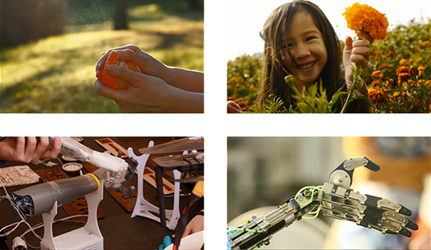

Introduce the Topic: Use the Video or Your Own Material
The human hand can perform several different movements. When combined, these movements present a whole range of possible motions and actions. These important movements are: finger flexion and extension (closing and opening), thumb flexion and extension (closing and opening), thumb rotation, and wrist flexion, extension and rotation.
When a person can’t perform one or more of these movements, some actions become difficult and sometimes impossible to do.
Prosthetic arms can help people to regain mobility. Some very advanced robotic arms can almost replicate all of the movements of a normal hand.

Vocabulary Words
- Flexion
-
In the case of fingers, moving the fingers closer to the palm of the hand. In the case of the wrist, moving the hand closer to the inside of the arm.
- Extension
-
In the case of fingers, moving the fingers away from the palm of the hand. In the case of the wrist, moving the hand closer to the outside of the arm.
- Prosthetic
-
An artificial device that replaces a missing part of the body.